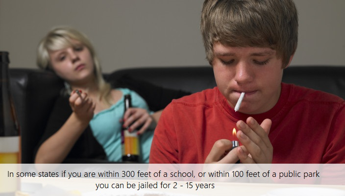
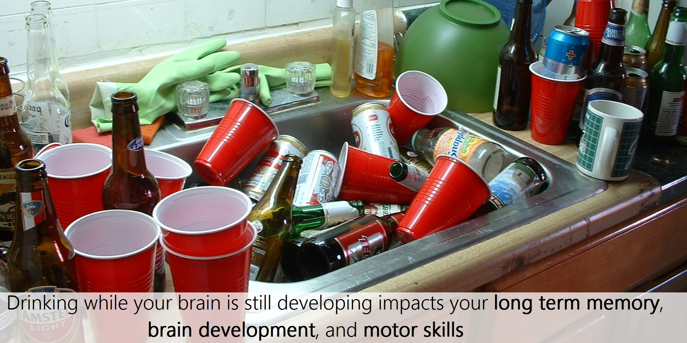
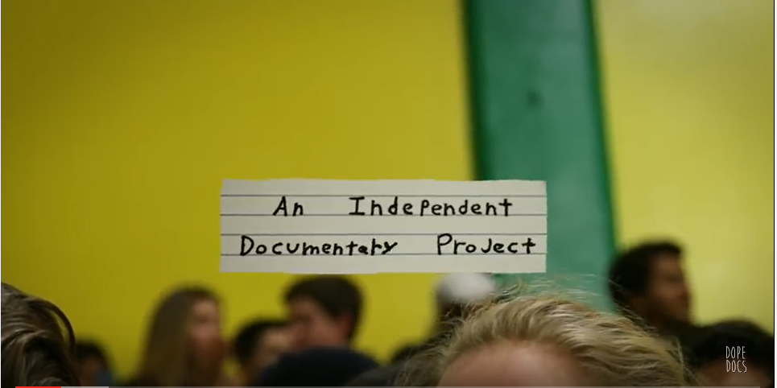
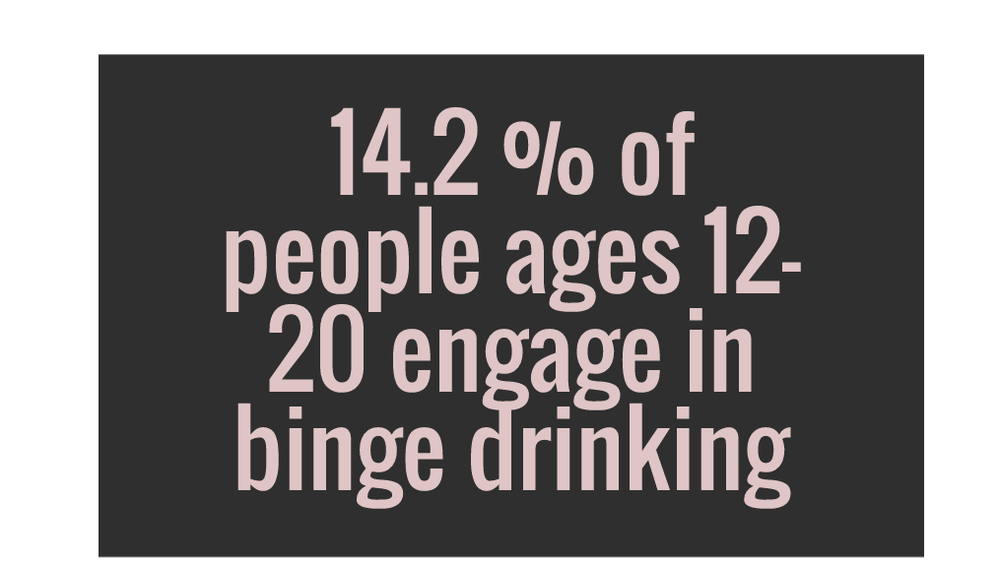
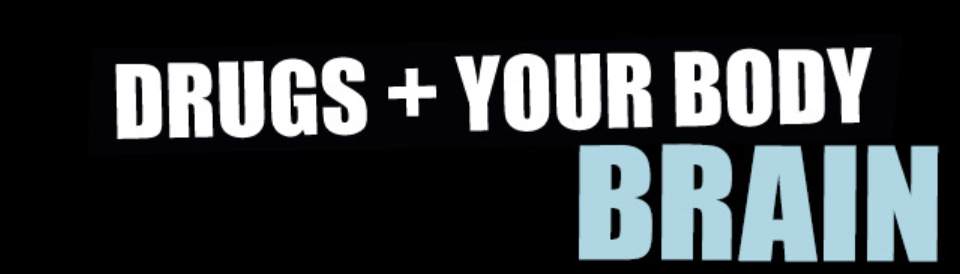
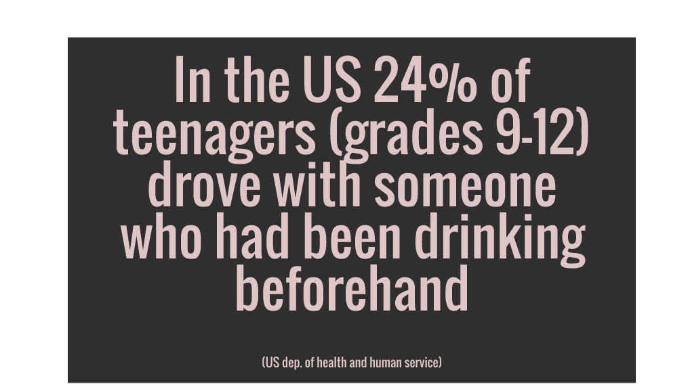

Issues
Black Lives Matter
Consent
Substance Abuse
About Us
 
❮
❯
Learn More
Perspectives
Synthetic cannabinoids, like K2 or Spice, are much more dangerous than marijuana because of their increased binding to receptors in the brain. Seizures, paranoia, violent behaviour, comas, high blood pressure, psychosis, are all side effects. (Click to read more)

This is an independent documentary about weed culture in a high school located in Portland Oregon. Filmed by Ben Greyzel. (Click to view the documentary)

Binge drinking is the pattern of ones consumption of alcohol where they bring their blood alcohol concentration to, or above 0.08 grams. Binge drinking often leads to alcohol poisoning and cardiovascular diseases. (Click for more info).
When a person smokes marijuana, THC quickly passes from the lungs into the bloodstream. The blood carries the chemical to the brain and other organs throughout the body. Marijuana also affects brain development. When marijuana users begin using as teenagers, the drug may reduce thinking, memory, and learning functions and affect how the brain builds connections between the areas necessary for these functions.(Click for more info)

This is an interactive website that allows you to look at how abusing substances affects different parts of your body. (Click to visit the website)

Drinking while your brain is still developing (until ages 20-25) has shown to impact long term memory, the development of the brain, and motor skills (among other things). It also increases the risk of hospitalization caused by physical injuries due to alcohol. (Click for more info)
Paris is the capital of France.